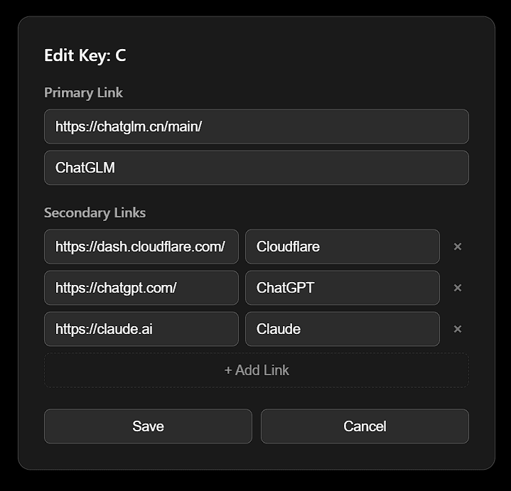
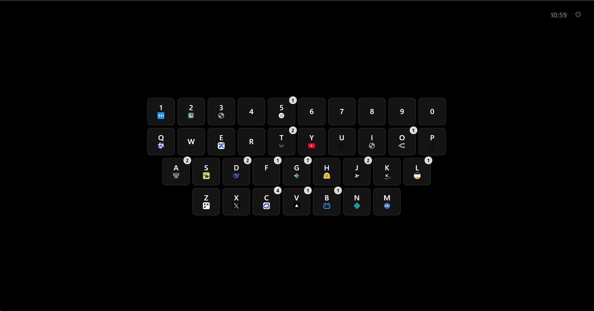
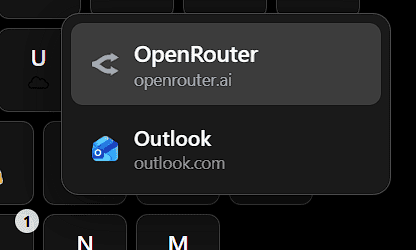
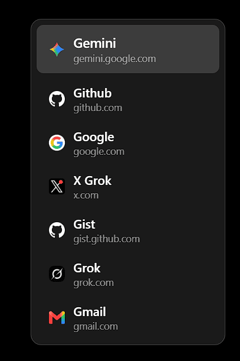

ZapStartTab
今天vibe了一个浏览器插件，主要是解决一下我个人使用浏览器的一个痛点——我想要快速打开一些网页，但是我不希望新标签页太复杂，只希望像以前那样用about:blank
以前我用omnibox快速打开网页，在地址栏输入一个字母就够了，但问题是有些网站无论是名字还是url很相似，我还得按方向键选择选择，不太舒服，于是就有了这样一个vibe项目
为什么vibe呢？因为我懒得写
我轮番在OpenCode里面拷打了Deepseek V4 Flash和Mimo V2.5 Pro，把bug修好了，虽然但是无限用量真爽，烧了大概15M token
代码和下载
由于只是一个vibe项目，对我个人而言不值一提，我写这篇只是想水一水博客了，不放Github，但是放了Gist
其中几个options开头的文件是放在options文件夹内的，.base64结尾的文件是二进制文件，因为gist不能放二进制文件，我随手找了一个工具把文件转换成了base64，也可以恢复
里面包含插件文件，不过要你自己从base64转回来，也可以直接从博客下载ZapStartTab.zip
使用
打开新标签页一看，一片空白，是故意的
按下shift键不松开，你会看到一个键盘，右击其中的按键可以进行配置：

这是我配置后的结果：

配置后，你可以按住shift用鼠标点击上面的按键直接打开Primary Link，也可以按住鼠标后移动鼠标选择其它链接，在松开鼠标的时候打开：

也可以在不按住shift的时候按下键盘上对应的按键，就能够在鼠标处自动弹出面板，移动鼠标选中，松开按键即可打开对应链接

使用简单，操作也很简单
次日二编：怎么这么多bug，怎么有的按键设置不上（再度拷打现在应该是修好了）